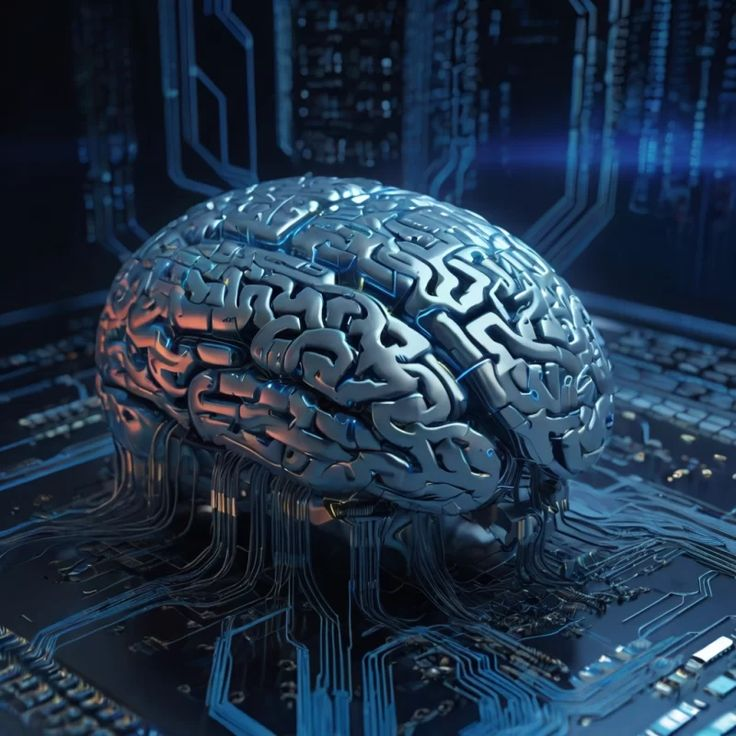

DESVENTAJAS DE LA INTELIGENCIA ARTIFICIAL
1. La vulneración de derechos
Los derechos de imagen, la privacidad de los datos utilizados y la posible vulneración de las leyes en vigor exigen una formación
específica para evitar posibles sanciones. De hecho, los países miembros de la UE han acordado debatir los detalles de una ley de IA.
Hasta su aprobación, será la LOPD la que vele por la privacidad de los datos compartidos durante el uso de la herramienta.
2. La dificultad de acceso a los datos
Ningún sistema de inteligencia artificial será eficaz si sus datos no están actualizados y tampoco si no son fiables. Desgraciadamente,
no siempre es así y el programa va desarrollando su labor sobre una base de datos errónea que termina por provocar errores sustanciales en el futuro de la empresa.
3. La falta de profesionales cualificados
Cada vez hay más profesionales formándose en la materia, pero la tecnología crece a un ritmo más rápido. Esta paradoja implica que no se pueda implementar la IA por no
haber técnicos que puedan desarrollarla en su totalidad.

4. El coste de su desarrollo
Aunque haya alternativas gratuitas de uso doméstico, el precio de los planes para profesionales podría ser prohibitivo. Si se trata de un sistema personalizado para una
empresa concreta el coste se dispara y solo las grandes compañías pueden permitirse una inversión así.
5. Pérdida de empleos
Automatizar las distintas tareas termina provocando que se eliminen varios puestos de trabajo como operarios de
fábricas, redactores o similares.
6. La dependencia de la tecnología
Basar toda la actividad de una empresa en la IA puede parecer positivo, pero en caso de error el futuro del negocio se vería seriamente afectado.
7. Falta de empatía y de ética
Cualquier decisión que toma la IA se va a caracterizar por no tener ningún tipo de empatía y por no ser creativa. Todo es una consecuencia del análisis de los datos
obtenidos y habría casos en los que las acciones elegidas no serían ni éticas, ni recomendables.
8. La posibilidad de su uso con fines maliciosos
Al no poder distinguir entre un dato positivo y uno negativo, la IA también ayudará a quienes la utilicen para sustraer datos ajenos o crear armas totalmente autónomas por
citar dos ejemplos del posible daño que podría provocar un mal uso de este tipo de inteligencia.